Summary Companion to the Master Installation Guide · Provisional Planning Dashboard
Above-surface 15mm copper two-pipe circuit · Pegler Tectite Sprint Push-Fit Fittings
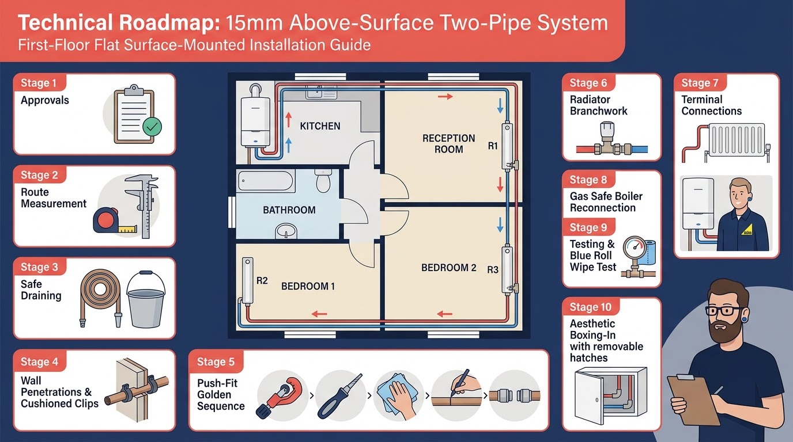
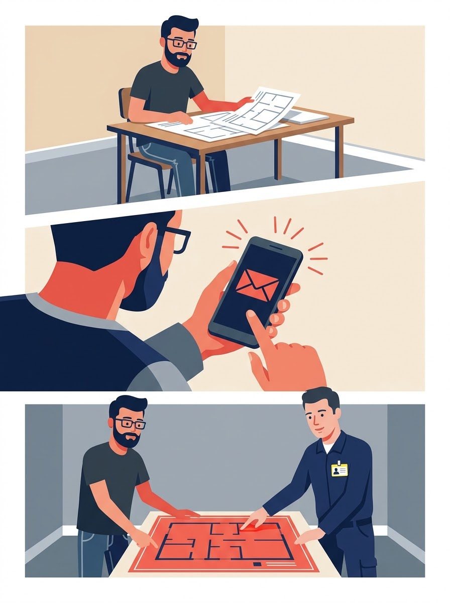
TL;DR: Check lease terms, notify your insurer, consult Building Control, and confirm the provisional route before buying pipe.
HSE distinguishes between "wet work" (installing room-side copper water pipes, valves, and radiators) and "gas work" on the appliance itself. A competent person may install water-side pipework. However, opening the boiler casing, breaking combustion seals, touching gas pipework, or reconnecting the boiler requires an appropriately qualified Gas Safe engineer.
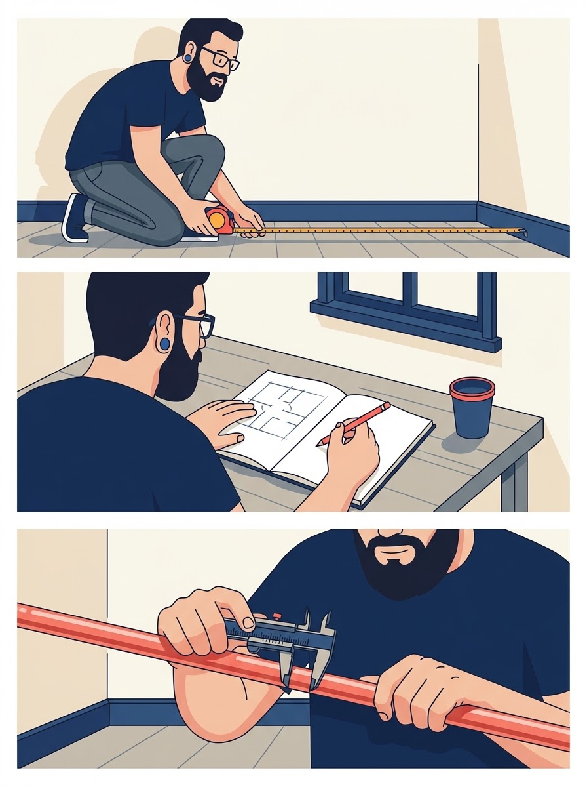
TL;DR: Measure room perimeters on site; never order pipe based solely on schematic floor plans.
| Section Description | Est. (m) | Measured (m) | Planning Notes |
|---|---|---|---|
| Boiler drop to floor level | 1.2 | Boiler ~1m up; allow offsets | |
| Along kitchen wall to partition | 2.7 | Kitchen wall width 2.72m | |
| Through kitchen–reception wall | 0.3 | Partition sleeve allowance | |
| Reception room — full width | 4.9 | Reception width 4.90m | |
| Right turn to Radiator R1 | 1.5 | Skirting approach to R1 | |
| R1 branch stubs | 0.5 | Vertical branch tails | |
| Through reception–bedroom wall | 0.3 | Partition sleeve allowance | |
| Into Bedroom 1 to Radiator R2 | 1.5 | Wall run to R2 position | |
| R2 branch stubs | 0.5 | Vertical branch tails | |
| Right turn — Bedroom 1 bottom wall | 2.1 | Bedroom 1 width 2.74m | |
| Through Bed 1–Bed 2 wall | 0.3 | Partition sleeve allowance | |
| Into Bedroom 2 to Radiator R3 | 2.5 | Approach to terminal R3 | |
| R3 terminal connection tails | 0.5 | 90° elbow stubs into valves | |
| ONE-WAY TOTAL | ~22.8m | ×2 for Flow + Return = ~45.6m |
Purchase Rule: 45.6m + 10% cutting waste = ~50m total. Buy 17 × 3m lengths = 51m (Wednesbury 15mm, Screwfix Code 98683 / 10-pack 17948).
Never identify pipes by external diameter alone. Positively identify connections via the official Glow-worm Compact manual, pipe temperature tracing, and on-site engineer verification.
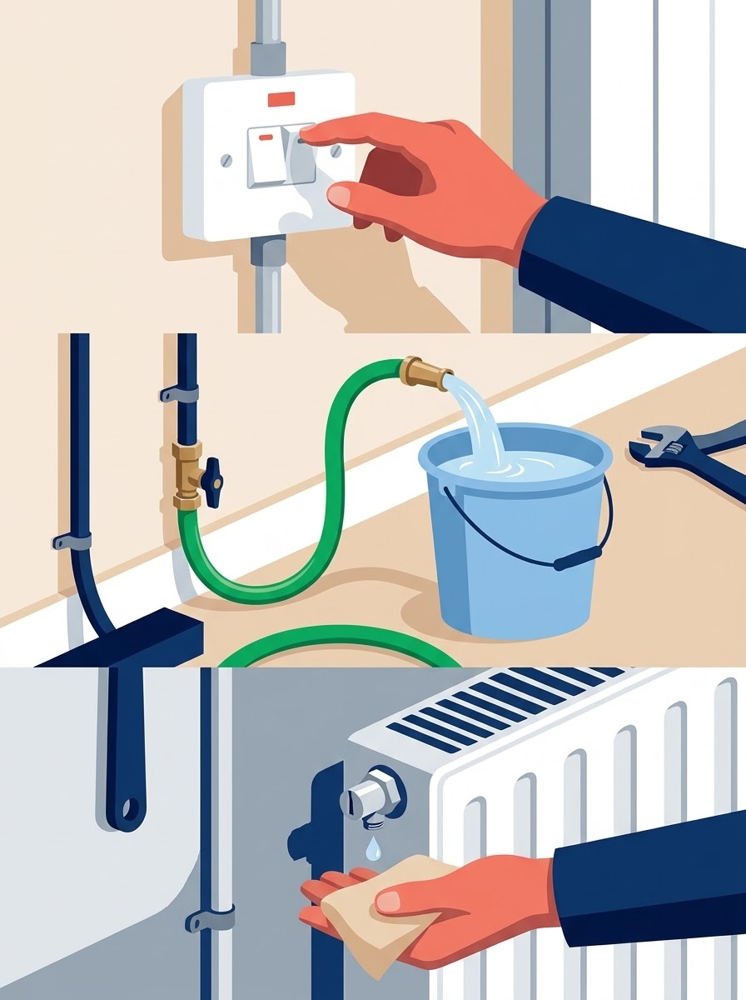
TL;DR: Isolate power via approved procedures, confirm cooling, and drain safely to protect against scalding and sludge stains.
Old heating circuits contain thick, black iron oxide sludge and chemical inhibitors. This liquid stains carpets permanently. Have heavy towels and a wet/dry vacuum immediately ready near every cut point.
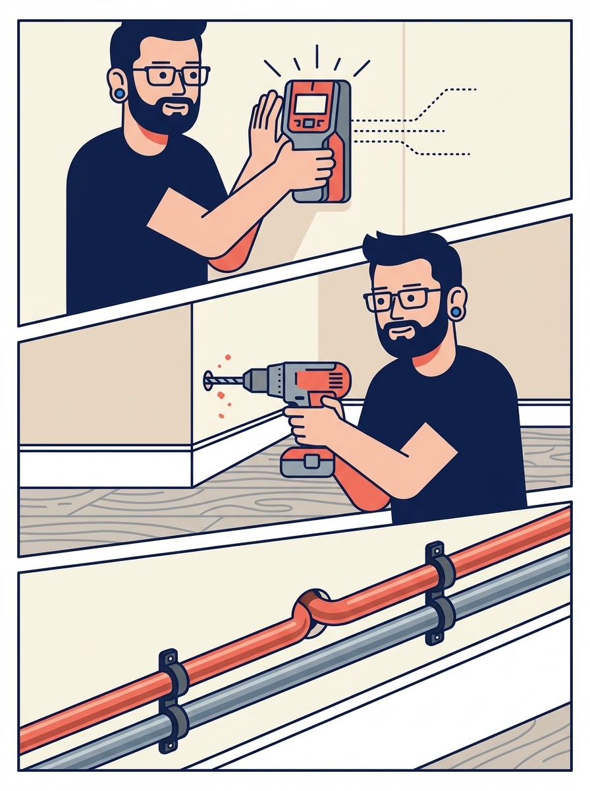
TL;DR: Scan walls before drilling, sleeve all partition penetrations, and install cushioned clips.
Do not fix copper tube rigidly in masonry holes. Holes must allow for expansion sleeves. If penetrating fire-resisting partition walls, intumescent sealant or approved fire sleeves must be fitted.
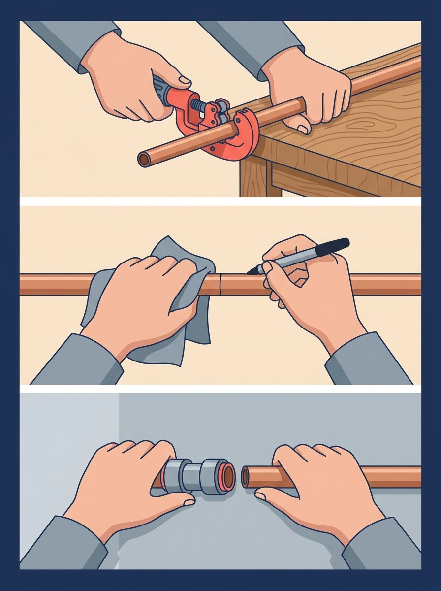
TL;DR: Push-fit joints live or die by tube preparation. Cut square, deburr thoroughly, clean, mark insertion depth, and push.
There is a critical difference between Tectite ranges that you must verify against your fitting packaging:
Rule: Always confirm socket depth with a ruler against the fitting stop and the manufacturer's packaging slip before marking.
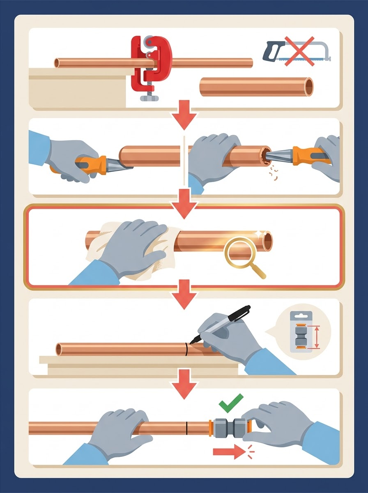
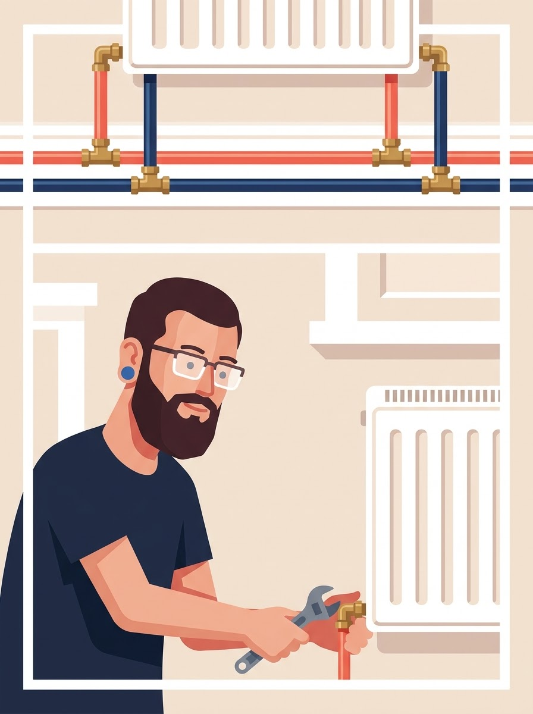
TL;DR: Connect radiators R1 and R2 in parallel using equal tees; trunks must continue past each radiator.
In a two-pipe system, each radiator acts as an independent bridge between the hot flow main and cool return main. Connecting radiators in series causes downstream radiators to receive cooled water, destroying system efficiency.
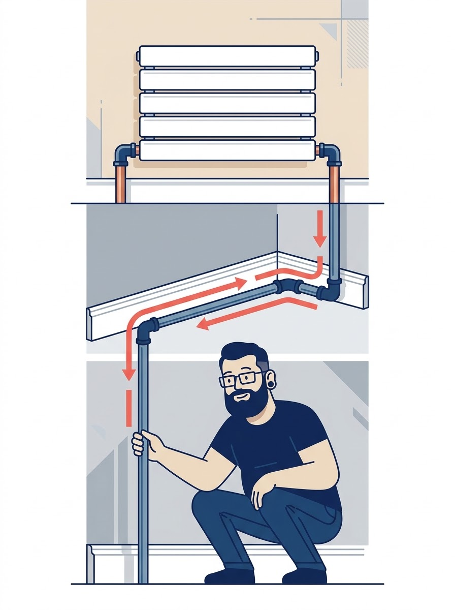
TL;DR: Terminate the loop at Bedroom 2 using 90° elbows (no tees); hand-trace the return back to the boiler.
Visual inspection confirms mechanical layout and alignment; it does not prove leak tightness. Keep all pipework, joints, and fittings completely exposed and accessible for the engineer's testing phase.
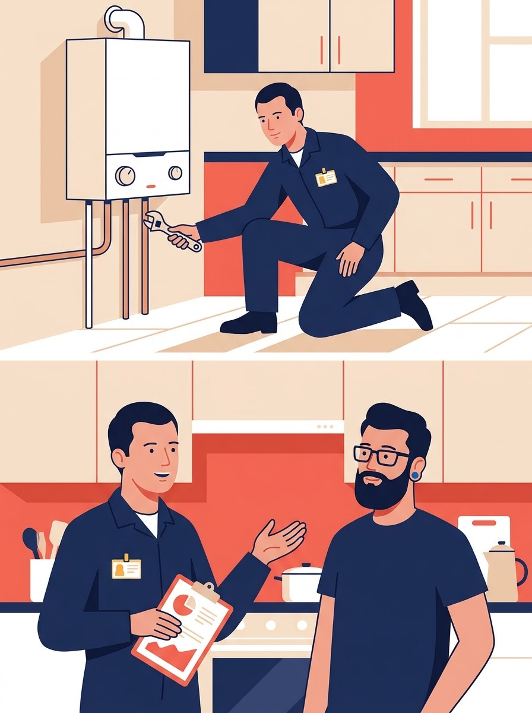
TL;DR: Present your capped, visible pipework stubs and hand over to the qualified Gas Safe engineer.
DIY work is strictly limited to room-side wet pipework. Any operation touching the appliance block, flue, internal hydraulics, or gas-carrying parts is legally restricted to certified engineers.
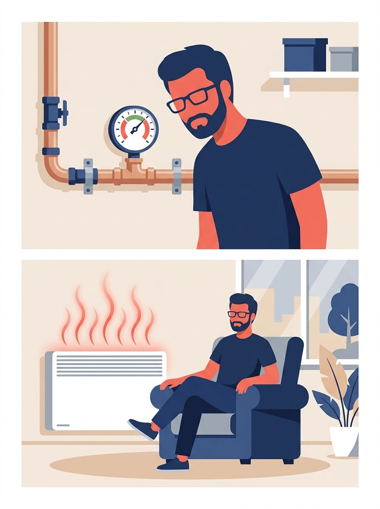
TL;DR: Fill to operating pressure, execute specified pressure tests, wipe every joint with dry blue roll, and dose inhibitor.
BS 7593 and Building Regulations Part L require full hydronic commissioning:
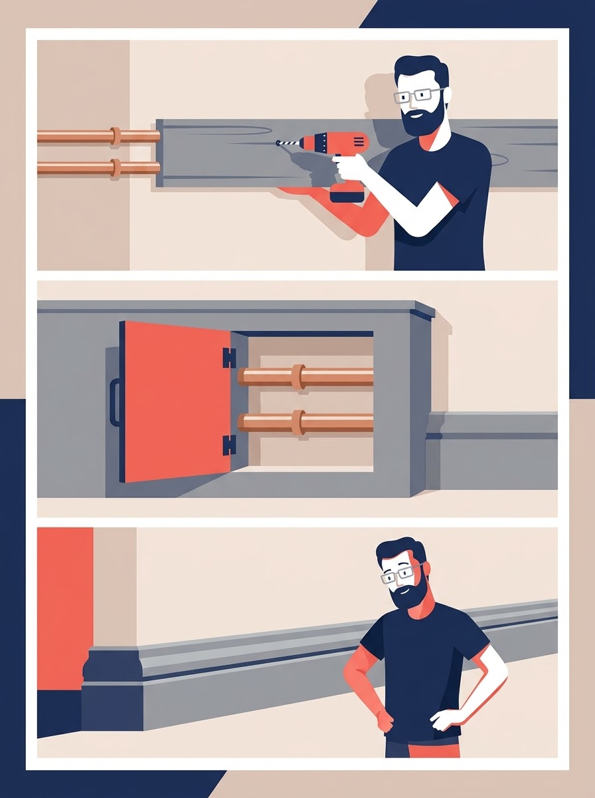
TL;DR: Hide the pipe runs with timber boxing, but retain permanent access hatches over all joints and valves.
Never permanently seal or plaster over push-fit joints. If an O-ring weeps in the future, access must be possible without demolishing skirting boards or finished flooring.